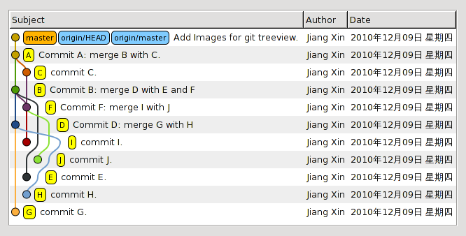

Git
You can entirelly use git reading the documentation found in Git homepage
Description
Git is a version control software that allows us to keep control and track different software development states. It has different kind of resources such as branches, tags or commits. We use git to maintain our software as well as to work in together with other team members without the need of sending different file versions. It handles the change versions for us.
Initialization
Just run git init or clone a repository from the cloud.
Resources
Remotes
Whe you work with a git repository it is also possible to have a reference to a remote one. For example, I create a repository in (github, altassian, gitea or gitlab) and I clone this repository locally.
How many repositories are right now?
After cloning a remote repository inside your local machine you leads into a 2 repository maintainance. This means that all the changes that you apply inside your local repository won't be updated automatically to the remote one, this will need to be set explicitelly.
Branches
We use branches to handle different unique versions of our code. Each branch can have commits, the commits are the representation of a persistent change inside a branch.
Explain do you see running the following commands.
mkdir test1
cd test1 && git init
git branch
Commits
A commit is a representation of an state of your package. When a commit is added into a branch it means we want to save some changes included in that commit.
Commits are persisted inside a branch and they can be shared between branches. The following picture shows how the commits and branches can live together.

Inside a working repository we have an stage. The stage is where we can control what we want to include in the commit.
What will happen if I apply the following commands?
mkdir test1
cd test1 && git init
touch a.txt
git commit -m "added a file"
git status
Add
This command is used to control the stage that will be used to create commits.
Explain the result of following commands:
mkdir test1
cd test1 && git init
touch a.txt
gst
git add a.txt
gst
After adding a file into the stage we will fill our commit context before it's created, this way we include changes into our current branch.
Commit your changes
git commit -m 'added a file'
Log
Using git log we can see all the commits from our current working branch.
An example:
commit 6f7ff25908510451539279f266d5a46de233a1bf (HEAD -> main, origin/main)
Author: Porky pig <porkypig@looneytoons.com>
Date: Fri Jun 3 21:45:42 2022 +0200
feat: installed mkdocs-gitbook and main folder structure created
Pess Q to leave the log view
Checkout
We can change between branches when we are working on a project. The way git is designed allows different devs to work in different subjects of the same git repository just doing their own tasks in a sepparated branch.
Checkout also allows us to create different branches from the one we already have.
For the following example we suppose that we already have a repository created with a commit that has the file a.txt included.
Execute the following commands and explain the results:
mkdir test1
cd test1 && git init
touch a.txt
git add a.txt
git commit -m 'added a file'
git checkout -b file_b
touch b.txt
git add b.txt
git commit -m 'added b file'
git checkout master
When you apply a checkout the files that have changes and the stage will be moved to the target branch. To control this behavior we can use the stash.
Merge
This command will take the last commit from one branch and will try to unify it with the current one.
So if we are in master and we do: git merge file_b it will pick the last commit from the branch file_b and will create a new commit in master that will have the changes from master and file_b unified.
Execute the following commands and explain the results.
mkdir test1
cd test1 && git init
touch a.txt
git add a.txt
git commit -m 'added a file'
git checkout -b file_b
touch b.txt
git add b.txt
git commit -m 'added b file'
git checkout master
git merge file_b